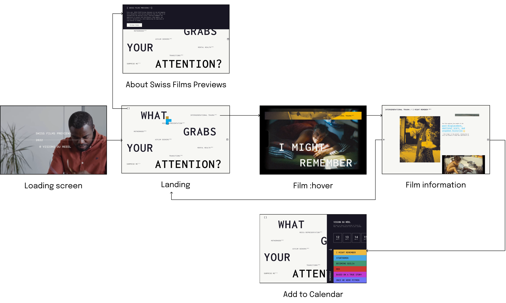

Swiss Films Previews
Graphic Design / Visual Identity / Microsite
A microsite, along with printed graphic assets, for the Swiss Films Previews pre-event, aiming to promote novice filmmakers and honor documentary films.

×

My Role
- Visual Designer
- UX Researcher
- Usability Testing
- Research Synthesis
Team
- Kathy Datsky
- Kezia Taufiq
- Haruhi Hosaka
- Monica de Mesa
Duration
- 5 weeks - Fall 2024
Project Overview
Over a 5-week project, our team delved into the works of designers like Dan Friedman and Ellen Lupton, drawing inspiration for graphical experiments that solidified our design principles. These explorations culminated in the creation of dynamic posters, assets, and ultimately a microsites for our simulated client, the Swiss Films Previews.
A Celebration to Swiss Films
Swiss Films promotes Swiss cinema by supporting filmmakers and annually hosting previews at festivals in Nyon, Locarno, and Winterthur. These events provide a platform for Swiss productions to showcase works in progress to industry professionals.
As these films are produced by junior filmmakers making their way into the industry, our graphic assets and microsite will focus on the pre-event, specifically the promotion of Swiss Films Previews at Visions du Réel, Locarno. By focusing on the real-world issues these films explore, we aim to emphasize their significance and why they matter.
An Analysis of Our Precedents
Through researching and learning about Dan Friedman’s graphic design methodologies and philosophies, we generated insights to shape our client’s project. The techniques we draw from Friedman’s work help us understand how to create a more dynamic hierarchy, guiding the viewer’s eye through the typography and drawing attention to key areas.
We also learned from Ellen Lupton's principles of design and applied two of them, including Transparency and Closure. Since our client is in cinematography, I was inspired by hand-drawn animation and suggested that the team focus on overlay transparency to create movement.
Exploring Art Directions
Iterate, Iterate, Iterate
The team engaged in a deeply collaborative process, experimenting with type, color, and imagery across hundreds of iterations. Drawing inspiration from each other's ideas, these cumulative small decisions resulted in the development of three distinct art directions, each with their own unique set of graphic assets.
I was responsible for the first direction and also for creating assets for the other two directions to further assist my teammates, considering our time constraints for this project.
Direction 1

Direction 2

Direction 3

Moving to Digital
Microsite Goal: Inspire & Connect
After experimenting with all three directions, we chose the third—and most expressive—direction for the microsite, recognizing its potential for an explorative experience.
The goal of this microsite is to inspire ticket holders who are unsure of which film to watch by presenting relevant information and themes, emphasizing each film’s significance and impact. It also aims to build an emotional connection with the audience through clear introductions and engaging narratives for each featured documentary.
Adapting Graphic Elements to Microsite
Keeping the essential design qualities of the third graphic art direction, we made appropriate adjustments to accommodate to the diverse content across the microsite pages and allow for smooth digital interactions. However, adjustments were made such as adopting darker colours from the palette to create higher contrast for web elements. Additionally, we shifted from using geometric shapes to relying on varied type alignments within the grid, which proved to be more effective and consistent for screen-based interaction.
User Flow
We continue to brainstorm what movies and related content would work best and created a site map to help organize the information architecture of our microsite.
Final Microsite


Micro (but key) Interactions
Inspired by a ‘Blind Book Dates’, the landing page acts as an opportunity to showcase the topics the 6 documentaries in the Previews touch on, allowing viewers to dig deep into films based on their emotional connection, and not “judge a book by its cover”.

To provide extra context about the film’s history, we've added a hover-triggered pop-up on selective words. This allows information to appear without cluttering the page or requiring additional scrolling, encouraging interaction instead.

Interactive images receive colour treatment to hint its interaction. When clicking on the image stack, images are spread across the page like a scattered photo album, reflecting the documentary theme and vintage TV aesthetic of the microsite.
Building on the 'opening a folder' theme throughout the microsite, which uncovers deeper layers of the documentaries, the "Add to Calendar" feature encourages visitors to buy ticket or save the date. Fixed to the right side of every screen, it serves as a constant prompt for users to easily add films to their calendar.
Reflection
Through these hectic 5 weeks, there was definitely a lot to I had to take away through the studying, research, and final development phases of the project. Being able to learn through the works of Dan Friedman revealed the intricacies behind his vision of Radical Modernism and opened my eyes to how key design principles can truly frame and drive an art direction.
By fully understanding how and why these principles are implemented, we as designers can create better assets that speak to different contexts. In the case of this project, I've learned that being able to understand the process of past designers can help develop our own process, and while graphic fundamentals are important to interaction design, the translation between both is not a simple one-to-one equation.